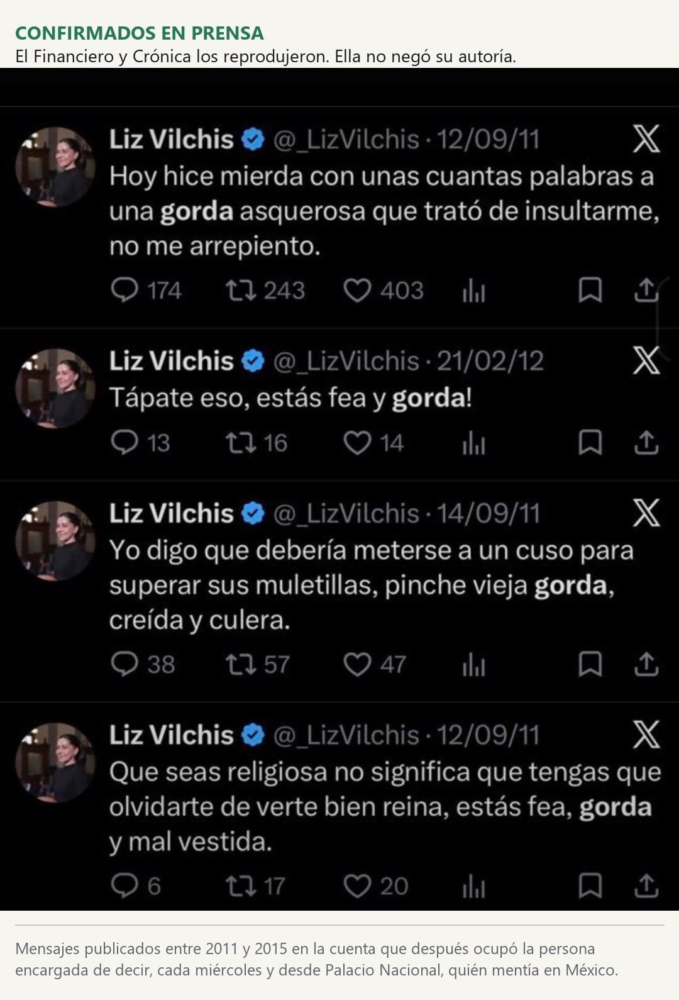
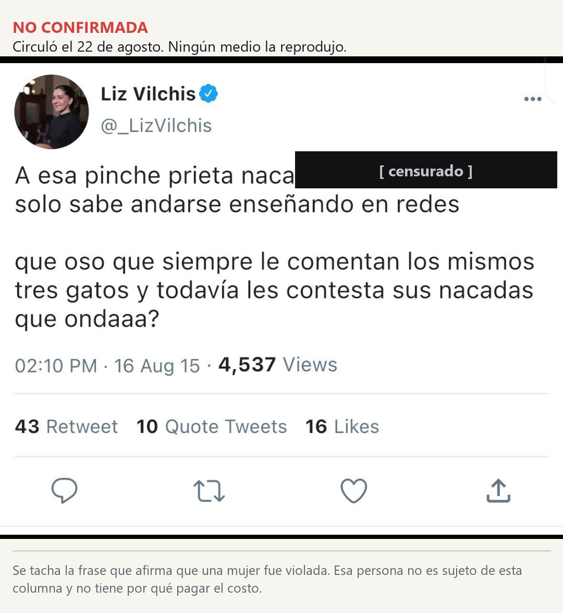

El nombre prestado
La sección desde la que la Consejería Jurídica leyó listas de periodistas el 12 de agosto lleva el nombre de un derecho que, por ley, corre en dirección contraria: es del particular frente al medio y solo se activa a petición de parte, cosa que el legislador escribió dos veces. Un tribunal ya juzgó la versión anterior. Y una de las capturas que hundieron a su antigua conductora no puede ser lo que dice ser.
El 12 de agosto, desde Palacio Nacional, la consejera jurídica del Ejecutivo federal, Luisa María Alcalde, presentó el análisis de una red de amplificación digital. Traía capas, cuentas semilla, un periodo de observación de siete meses y gráficas. Traía también, según documentó ARTICLE 19, "listas de periodistas, comentaristas, analistas políticos, opositores políticos del gobierno y presuntas cuentas anónimas en redes sociales". Cuando llegó la crítica, Alcalde respondió que "no hay listas negras ni decimos que los medios estén financiando bots o trolls". La discusión que siguió se ocupó de eso durante seis días: de si era o no una lista.
Nadie leyó el encabezado. La sección donde ocurrió se llama Derecho de Réplica.
Conviene revisarlo con la ley en la mano, porque el nombre no es decorativo. La Ley Reglamentaria del artículo 6o. constitucional en materia del Derecho de Réplica se publicó en el Diario Oficial el 4 de noviembre de 2015 y su última reforma es del 14 de noviembre de 2025. Su artículo 2 define el derecho como "el derecho de toda persona a que sean publicadas o difundidas las aclaraciones que resulten pertinentes, respecto de datos o informaciones transmitidas o publicadas por los sujetos obligados, relacionados con hechos que le aludan, que sean inexactos o falsos, cuya divulgación le cause un agravio". Su artículo 4 dice quiénes son esos sujetos obligados: "los medios de comunicación, las agencias de noticias, los productores independientes y cualquier otro emisor de información responsable del contenido original".
Falta lo que decide el caso, y está dos veces. El artículo 9 ordena que el procedimiento "deberá iniciarse, en todos los casos, a petición de parte". Trece artículos después, para la vía judicial, el 22 repite que "se iniciará siempre a petición de parte". Cuando un legislador escribe lo mismo dos veces, con dos adverbios distintos y para dos rutas distintas, no está siendo redundante. Está cerrando una puerta.
De modo que la figura es esta: una potestad del particular frente a quien lo señaló, que corre hacia el aludido y nunca contra él, y que solo camina si el agraviado la pide. Un funcionario puede ejercerla, desde luego, porque el artículo 3 habla de toda persona y no excluye a nadie. Lo que sigue es mi lectura y la ofrezco como tal: un espacio oficial que toma prestado ese nombre para leer listas invierte la dirección completa del instituto, porque pone al Estado en el lugar del agraviado y a los ciudadanos en el de los sujetos obligados.
Hay un segundo problema, y es de competencia. El artículo 43 de la Ley Orgánica de la Administración Pública Federal enumera en doce fracciones lo que le toca a la Consejería Jurídica: apoyo técnico jurídico al Presidente, iniciativas de ley, opinión sobre tratados, revisión de reglamentos, coordinación de criterios, la Comisión de Estudios Jurídicos, la representación en las controversias del 105 constitucional. Ninguna menciona monitorear la conversación pública ni clasificar información como verdadera o falsa. La fracción XII cierra con "las demás que le atribuyan expresamente las leyes y reglamentos", y esa palabra, expresamente, es la que decide.
Y está la Constitución. Su artículo 7o. dispone que no se puede restringir la libertad de difundir "por vías o medios indirectos, tales como el abuso de controles oficiales". Es casi el mismo lenguaje que usó un tribunal para describir el aparato anterior.
Porque esto ya pasó por un juzgado. El 14 de abril de 2025, el Vigésimo Tribunal Colegiado en Materia Administrativa del Primer Circuito resolvió por unanimidad el amparo 1369/2023, promovido por el periodista Raymundo Riva Palacio, y determinó que "Quién es quién en las mentiras" operó "como un instrumento de estigmatización, utilizando recursos públicos para desacreditar y señalar de manera unilateral a periodistas críticos", y que ese diseño "fomenta la censura indirecta, la polarización social y erosiona los pilares de la democracia". Conviene precisar el alcance, porque los titulares lo redondearon de más: fue un amparo con efectos para el quejoso, no una declaratoria general de inconstitucionalidad. Dos años antes, la Relatoría Especial para la Libertad de Expresión de la CIDH había pedido en su informe anual 2022 "suspender esta práctica".
Y aquí está lo que casi nadie ha puesto en una sola línea. La sección arrancó en junio de 2021. Cerró el 25 de septiembre de 2024, cuando el entonces presidente agradeció a Ana Elizabeth García Vilchis "tres años informando lo que sucede en los medios de comunicación". Catorce días después, el 9 de octubre, abrió su reemplazo: la sección Detector de Mentiras, los miércoles, a cargo de Miguel Ángel Elorza Vásquez, coordinador de Infodemia. Y desde el 3 de junio de este año existe el espacio semanal de la Consejería Jurídica que se llama Derecho de Réplica.
Tres nombres, un mismo aparato, cinco años. De ninguno de los tres hemos podido localizar una metodología publicada, y en el caso del vigente es justamente lo que ARTICLE 19 le reclamó por escrito.
Ahora la persona, y hay que pisar con cuidado. El 30 de octubre de 2025 García Vilchis volvió a la mañanera acreditada como reportera de SDP Noticias, y la presidenta la saludó desde el estrado con un "Liz, no te reconocí. Bienvenida". Diez días después de la presentación del 12 de agosto, la misma mecánica corrió por su cuenta, sin oficina y sin presupuesto, contra ella: una tribuna, una lista de nombres, ninguna réplica, dos días. Circularon mensajes suyos escritos entre 2011 y 2015, casi todos sobre el cuerpo de otras mujeres. Su cuenta de X dejó de estar disponible y volvió el sábado 22, sin explicación pública.
Cuando un legislador escribe lo mismo dos veces, con dos adverbios distintos y para dos rutas distintas, no está siendo redundante. Está cerrando una puerta.

Ese día publicó una disculpa.
Esta casa sostuvo en julio, a propósito de un señalamiento anónimo en Facebook contra una funcionaria de Cuautla, que una captura no es una prueba. El principio no cambia de bando cuando el señalado cae antipático, así que revisamos el paquete que circuló. Una de esas imágenes, la que atribuye a García Vilchis una frase racista, viene fechada a las 18:08 del 22 de agosto y está contenida dentro de una captura de pantalla tomada ese mismo día a las 12:19, seis horas antes. No afirmo que alguien la haya fabricado con dolo: varios generadores de tarjetas estampan la fecha del día en que se produce la imagen. Afirmo algo más modesto y más difícil de esquivar: esa captura no puede ser lo que dice ser, así que no prueba nada.

Y la frase más compartida de todo el material, la que servía de remate, no la reprodujo ningún medio. La publicamos aquí porque el lector tiene derecho a ver de qué se está hablando, con dos advertencias encima: que nadie la ha confirmado, y que la parte donde se afirma que una mujer fue violada va tachada. Esa mujer no es sujeto de esta columna.

Hay que decir lo que sí está documentado, porque se sostiene solo y juega contra cualquier lectura indulgente. Los mensajes que reprodujeron El Financiero, Crónica e Infobae, entre ellos uno del 29 de enero de 2015 contra la entonces diputada Nayeli Salvatori y otro sobre las madres jóvenes, son suyos, y ella no los negó. Once años son mucho tiempo, y sostener que una persona puede cambiar no es una coartada: es el supuesto sobre el que descansan el derecho penal moderno y casi toda la ética. Su disculpa fue más específica que el promedio de las disculpas públicas mexicanas, porque nombró las conductas. Y quienes reflotaron el archivo no estaban defendiendo un método de verificación. Estaban cobrando una factura política.
Todo lo anterior tenía la gramática de la verificación y ninguno de sus controles. En 1972, en el American Journal of Sociology, la socióloga Gaye Tuchman llamó a eso un "ritual estratégico": los procedimientos visibles de la objetividad ejecutados para blindar de la crítica a quien los ejecuta, sin producir por sí solos la verdad que aparentan. Un verificador institucional publica cómo verifica, concede réplica y registra sus propios errores. Ninguna de las tres versiones hizo las tres cosas.
El problema nunca fue quién leía el guion. El problema es que desde 2021 alguien decide, desde una tribuna pagada con dinero público, qué es mentira en este país, sin criterios escritos, sin metodología publicada y sin instancia que revise a quien revisa. Foucault lo dijo mejor en su lección inaugural del Collège de France, en diciembre de 1970: la pregunta no admite respuesta técnica, porque toda sociedad tiene su régimen de verdad y lo que se disputa es quién queda autorizado a enunciarla.
Si el Estado no puede decidir qué es mentira, y el linchamiento tampoco, la pregunta queda abierta. Aunque el derecho ya había ensayado una respuesta y hasta le puso nombre. Se llama réplica: el señalado contesta, con el mismo alcance y sin pagar por hacerlo. Es exactamente lo que ninguna de las tres versiones ha concedido nunca.
- Ley Reglamentaria del Artículo 6o., párrafo primero, de la Constitución Política de los Estados Unidos Mexicanos, en materia del Derecho de Réplica. DOF 4 de noviembre de 2015; última reforma DOF 14 de noviembre de 2025; 42 artículos. Vigencia comprobada el 24 de agosto de 2026 contra el índice de la Cámara de Diputados. Artículos 2, 3, 4, 9 y 22 citados textualmente desde el acervo de la casa (`LEYES/NAC - Ley Reglamentaria del Articulo 6o en materia del Derecho de Replica.md`, pp. 1 a 5): diputados.gob.mx/LeyesBiblio/pdf/LRArt6_MDR.pdf
- Ley Orgánica de la Administración Pública Federal, artículo 43, doce fracciones de la Consejería Jurídica del Ejecutivo Federal. Citado desde el acervo de la casa (`LEYES/NAC - Ley Organica de la Administracion Publica Federal.md`, pp. 72 y 73): diputados.gob.mx/LeyesBiblio/pdf/LOAPF.pdf
- Constitución Política de los Estados Unidos Mexicanos, artículo 7o. Citado desde el acervo de la casa (`LEYES/NAC - Constitucion Politica de los Estados Unidos Mexicanos.md`, p. 18): diputados.gob.mx/LeyesBiblio/pdf/CPEUM.pdf
- Presentación de la Consejería Jurídica del Ejecutivo Federal en la sección Derecho de Réplica, 12 de agosto de 2026, versión estenográfica de Presidencia: gob.mx/cjef/articulos/derecho-de-replica-12-de-agosto-de-2026
- El Universal, "Luisa Alcalde niega haber creado lista negra de periodistas", 13 de agosto de 2026. De ahí salen el nombre de la sección, el cargo y la cita del desmentido: eluniversal.com.mx/nacion/luisa-alcalde-niega-haber-creado-lista-negra-de-periodistas-asegura-que-presento-analisis-de-un-ecosistema-digital
- ARTICLE 19, "No corresponde al Estado mexicano el monitoreo y calificación de la conversación pública", 16 de agosto de 2026. De ahí salen la descripción de las listas y la cita sobre incompatibilidad constitucional: articulo19.org/no-corresponde-al-estado-mexicano-el-monitoreo-y-calificacion-de-la-conversacion-publica
- Sentencia del Vigésimo Tribunal Colegiado en Materia Administrativa del Primer Circuito, amparo 1369/2023, resuelto por unanimidad el 14 de abril de 2025, promovido por Raymundo Riva Palacio. Reseñado por LatAm Journalism Review, del Centro Knight de la Universidad de Texas en Austin: latamjournalismreview.org/es/news/conferencias-de-prensa-de-expresidente-lopez-obrador-operaron-como-instrumento-de-estigmatizacion-a-periodistas-criticos
- Relatoría Especial para la Libertad de Expresión de la CIDH, Informe Anual 2022, capítulo México, difundido en mayo de 2023: politica.expansion.mx/presidencia/2023/05/09/cidh-pide-quitar-quien-es-quien-en-las-mentiras-porque-estigmatiza-a-la-prensa
- Verificado MX, "Sheinbaum presenta Detector de Mentiras", 11 de octubre de 2024. De ahí salen la fecha del 9 de octubre de 2024 y el nombre del coordinador de Infodemia: verificado.com.mx/sheinbaum-presenta-detector-de-mentiras
- El Financiero, "Elizabeth Vilchis regresa a las mañaneras como reportera", 30 de octubre de 2025: elfinanciero.com.mx/nacional/2025/10/30/elizabeth-vilchis-regresa-a-las-mananeras-como-reportera-esto-le-pregunto-a-sheinbaum-sobre-amlo
- Crónica, 21 de agosto de 2026, y El Financiero, 22 de agosto de 2026, para los mensajes confirmados de 2011 a 2015 y el texto de la disculpa: cronica.com.mx/tendencias/2026/08/21/te-acuerdas-de-liz-vilchis-revelan-polemicos-tuits-discriminatorios-de-la-antigua-colaboradora-de-amlo
- Infobae, "Suspenden cuenta de X de Liz Vilchis tras polémica por antiguos tuits discriminatorios", 22 de agosto de 2026: infobae.com/mexico/2026/08/22/suspenden-cuenta-de-x-de-liz-vilchis-tras-polemica-por-antiguos-tuits-discriminatorios
- Gaye Tuchman, "Objectivity as Strategic Ritual: An Examination of Newsmen's Notions of Objectivity", American Journal of Sociology, vol. 77, núm. 4, enero de 1972, pp. 660-679. DOI 10.1086/225193. Referencia cotejada el 24 de agosto de 2026 contra el índice del número en JSTOR; el texto completo está tras muro de pago y no se abrió, de modo que la caracterización del concepto se apoya en el resumen publicado: jstor.org/stable/i328986
- Michel Foucault, L'ordre du discours, Gallimard, 1971 (lección inaugural en el Collège de France, 2 de diciembre de 1970). Edición en español: El orden del discurso, Tusquets. ISBN 978-8483105054: tusquetseditores.com/libros/el-orden-del-discurso
Las ligas van a la vista para que cualquiera compruebe por su cuenta. Si alguna dejó de resolver, escríbenos y la reponemos.
SRVO